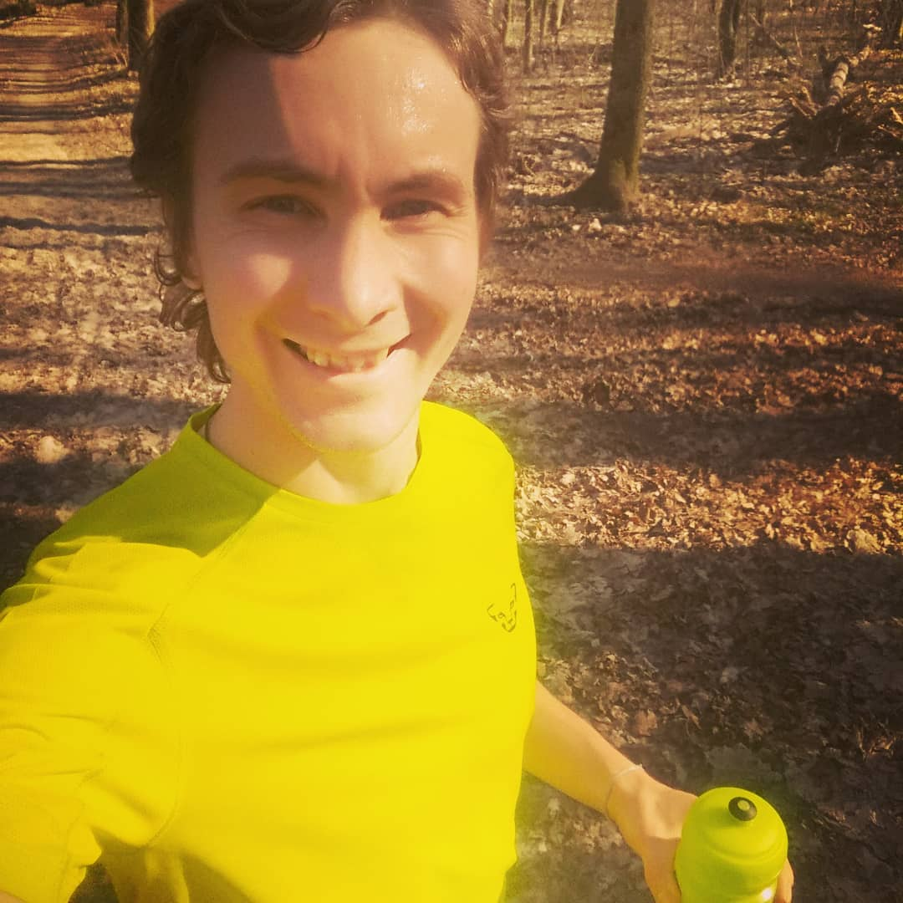
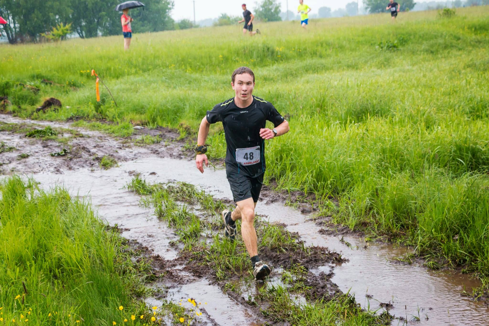
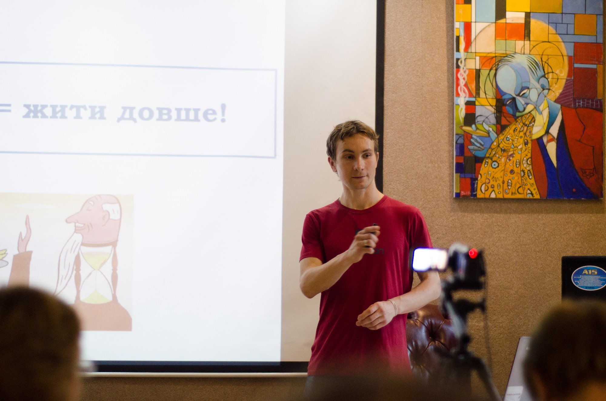
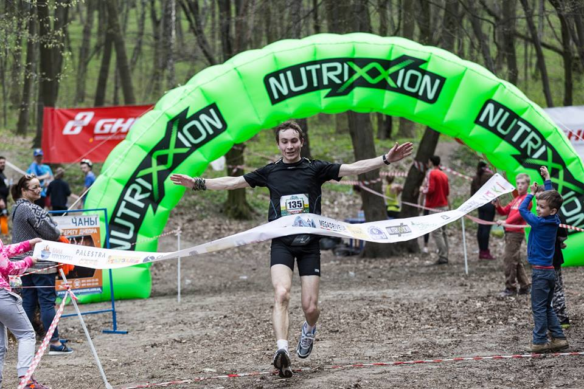

Біг як лайфстайл: біжи, посміхайся, перемагай!
Що для тебе біг?
Років з 10 тому я б відповів, що для мене біг – це вид фізичної активності, яка допомагає бути в тонусі при моїй багато в чому сидячій роботі у лабораторії, бути більш витривалим у гірських походах і тренуваннях карате. Років з 5 тому – моя відповідь була б, що біг – це задоволення від пробіжки, цікаві старти, можливість позмагатися й пізнати свої можливості. А сьогодні – для мене біг – це інструмент, який може залежно від задач, виконувати усі вищеперелічені функції :) А загалом, кожна пробіжка особлива й відкриває щораз якісь нові грані як бігу, так і мене самого.

Зараз дуже популярна думка, що "від депресії можна втекти ногами". Окрім того, що це просто відволікає, як біг впливає на наш настрій?
Насправді пробіжка навіть не дуже тривалої та високої інтенсивності буде сприяти виробленню клітинами головного мозку цілого коктейлю <<молекул щастя>> . Це і дофамін, серотонін, ендорфіни, ендоканабіноїди... Кожен з них діє по-різному впливаючи на нашу мотивацію, відчуття задоволеності, появу легкої ейфорії. Крім того, пробіжка покращує приток крові та надходження кисню до всіх органів, в т.ч. і головного мозку. Додамо сюди ще ефект від споглядання природи (якщо пробіжка у парку) чи просто зміни обстановки, спілкування (якщо Ви тренуєтеся у групі) і матимемо суцільні позитивні впливи на настрій загалом. Те, що бігуни набагато більш задоволені життям за своїх колег по роботі – також було показано у багатьох дослідженнях.
А чи правда, що під час тривалого бігу організм позбавляється від якихось "шкідливих речовин" чи "шкідливих клітин"?
- Біг стимулює кровообіг до всіх органів та систем організму, а це значить, що і продукти обміну, шкідливі речовини – будуть виводитися значно швидше.
- Ритмічні рухи під час бігу, в першу чергу, позитивно впливають на кишечник, здійснюючи свого роду масаж і покращуючи його перистальтику. Як наслідок зникають розлади, запори, нетравлення. Крім того, біг сприяє усуненню застоїв у жовчному міхурі, нормалізує роботу шлунку, підшлункової залози і печінки.
- Дослідження показують, що біг низької та середньої інтенсивності підвищує захисні сили організму за рахунок збільшення продукції різних класів імунних клітин, а також захисних білків. Це дозволяє імунній системі ефективніше боротися з чужорідними бактеріями, а також власними <<неправильними>> онкотрансформованими клітинами та позбуватися їх.
- Відповідно – регулярні тренування дозволять не тільки швидше позбавлятися всіляких <<шкідливих речовин>>, а й істотно заощадити на лікарях і пігулках :)

Малорухливий спосіб сучасного життя і споживання висококалорійної рафінованої їжі дається взнаки, змушуючи багатьох з нас переходити на одяг більшго розміру. А на скільки дієвий біг для схуднення?
Біг дає навантаження на велику кількість м'язів організму – відтак, буде сприяти <<спалюванню>> додаткових калорій, окрім тих, які йдуть на основний метаболізм. Біг у певних пульсових зонах – буде ефективно залучати жирні кислоти й <<спалювати>> жири. Втім, потрібно розуміти, що для схуднення – важливий баланс – не тільки те, скільки Ви <<спалюєте>> (бігом чи іншою активністю), а й те – скільки споживаєте. Це – як дебет/кредит у банку :) Потрібно, щоб видатки, були більші за прибутки. Тоді, поступово, жирова тканина <<збанкрутує>> і змушена буде залишити <<обжиті>> частини тіла.
А чи правда, що тривалі заняття бігом підтюпцем можуть негативно відобразитися на колінах та здоров'ї хребта?
Частково. Якщо людина без підготовки, а, відповідно, і за відсутності <<правильної>> техніки бігу, в невдало підібраному взутті, з передісторією якихось проблем з опорно-руховим апаратом почне посилено тупцяти асфальтом, бетонованими доріжками – справді з високою вірогідністю травми і проблеми з колінами, стопами, хребтом не забаряться. Але, з іншого боку, якщо людина навіть маючи якісь проблеми зі здоров'ям почне по-трохи бігати підтюпцем, краще – під наглядом досвідченого тренера аби уникнути можливих проблем, і в правильному екіпіруванні – то швидше за все вона про всі ці свої болячки скоро забуде. І зовсім не тому, що погіршиться пам'ять :) Справа в тому, що помірні навантаження потрібні для правильного функціонування наших м'язів, зв'язок, суглобів. Саме дозовані ударні навантаження – будуть посилювати вироблення хондропротекторів (хондроїтина і глюкозаміна) хрящовою тканиною, стимулюватимуть утворення синовіальної рідини в суглобах, також підвищиться засвоєння кальцію кістками. Тому в ажливо підходити до цього питання помірковано,починати з малого, прислухатися до відчуттів та, за необхідності, консультуватися із кваліфікованими спеціалістами.

А все ж таки , якщо під час бігу починають боліти коліна – яких заходів потрібно в жити ?
Причин, чому можуть боліти коліна – чимало. І не обов'язково це пов'язано з якоюсь серйозною травмою. Неправильна техніка, непідходяще взуття, недостатньо розвинені м'язи ніг – можуть призводити до того, що колінний суглоб отримує навантаження до якого не готовий і, відповідно, реагує на це болем.
Перш за все слід мінімізувати вплив таких факторів як неправильна техніка, взуття, поверхня для бігу. Якщо таке має місце, є сенс почати тренування з тренером, нехай він допоможе закласти Вам правильну <<бігову базу>> та порадить у чому, де і як краще бігати.
Якщо ж біль з'являється регулярно, є сенс відвідати ортопеда-травматолога, і бажано – спортивного. За допомогою різних тестів, досвідчений лікар може визначити причину, ймовірно – порадить зробити знімок МРТ для уточнення діагнозу.
Самолікування за допомогою холодних компресів, знеболювальних – може дати тільки тимчасовий результат й не гарантує одужання, якщо не усунуто причину. Тому треба завжди шукати основну причину та працювати над її усуненням. Окремою причиною можуть бути травми коліна. Справедливо зазначити, що вони одні з найчастіших у бігунів, тож слід їм ретельно запобігати та вчасно і кваліфіковано лікувати.
А як вибрати це "правильне" взуття і невже справді це має таке важливе значення?
Тут слід враховувати два фактори. З одного боку, регулярно бігаючи та виконуючи спеціальні вправи для укріплення стоп – якихось особливих кросівок Вам не буде потрібно . З іншого боку, враховуючи сучасний стан здоров'я більшості населення (надмірна вага, слабкість м'язів та зв'язок, плоскостопість та ін.) швидше за все для багатьох, хто тільки починає бігати – це все треба буде коригувати на початкових етапахв т.ч. вибором <<правильного>> взуття. Тому, взуття – справді може бути особливо важливе в певних випадках. Але ще більш важливими є правильна техніка, а також укріплення стопи, зв'язок. Тоді потреби постійно шукати якісь <<інноваційні>> кросівки, які врятують від проблем та дозволять покращити результати – просто не буде. Зрештою, якими б модними та класними не були кросівки – марафон вони подолають тільки за Вашої активної участі, при достатній підготовці ☺
А чому може виникати біль в боці, на скільки це може бути небезпечно та що робити в таких випадках?
Біль в боці може виникати з багатьох причин. В контексті бігу, швидше за все має місце:
- Занадто інтенсивне навантаження
- Недостатньо глибоке дихання
- Занадто насичений прийом їжі або недостатня перерва після їжі
- Порушення в роботі органів шлунково-кишкового тракт
Якщо збільшення навантаження під час бігу відбувається занадто швидко, кров депонована в стані спокою у печінці, фізично не встигає вийти, що призводить до збільшення об'єму печінки. При цьому печінка починає тиснути на сполучнотканинну капсулу, якою оточена, збуджуючи численні нервові закінчення. Так виникає больовий сигнал в області правого підребер'я (печінковий больовий синдром). Це досить поширене явище у здорових, але мало тренованих людей. Якщо ж біль відчувається в лівому боці – значить на різке збільшення обсягу крові відреагувала селезінка.
Тому не рекомендується тренуватися якщо пройшло недостатньо часу після прийому їжі для її перетравлення. Як правило, це 2-3 години якщо прийом їжі був не дуже об'ємним. Адже організм для перетравлення якраз має збільшити приплив крові до шлунка, печінки, а також селезінки і жовчного міхура. Відповідно, чим більше і <<важче>> для перетравлення була їжа, тим більше часу потрібно чекати перед пробіжкою.
Регулярна поява болю в боці при тренуваннях – може сигналізувати про початок розвитку патологій органів системи травлення, наприклад гепатитів, панкреатитів, жовчнокам'яної хвороби та ін. Тому при таких симптомах слід звернутися до лікаря.
Про фізіологію: існує думка, що біг з якихось причин може бути нефізіологічний для жінок. Чи є якісь підстави так вважати?
Жодних підстав так вважати немає. І чоловіки і жінки – представники Homo sapiens, які в ході своєї еволюції та історії мусили добряче побігати :) Як полюючи на мамонтів, різних копитних, так і рятуючись від шаблезубих тигрів, ведмедів, наприклад. Тому біг фізіологічний як для чоловіків, так і для жінок. Але різницю у анатомії та фізіології жінок та чоловіків – звісно вартує враховувати у тренувальному процесі.
Про красу: існує також думка, що біг підтюпцем може провокувати обвисання шкіри на обличчі у жінок старшого віку, якщо не "тримати лице" – чи може це мати місце?
Під час бігу – працюють ті ж самі сили гравітації, що і у повсякденному житті. Тому, не варто перейматися, що шкіра може обвисати більше ніж при, скажімо, сидінні за в'язанням чи перед телевізором. Навпаки – біг покращує кровообіг в т.ч. до шкіри, відповідно у бігунів вона буде більш еластичною, пружною, здоровою.
Чи варто, скажімо, захоплюватися бігом щасливим чи не дуже власницям великого розміру грудей? Чи ліпше, все таки, обирати інші види спорту?
Великий розмір грудей – звісно буде ускладнювати заняття бігом але не є протипоказанням. Сьогодні існує чимало компаній виробників спортивного одягу, вони пропонують спеціальні бра та топи, аби допомогти власницям великого розміру грудей займатися улюбленими видами спорту і бігом зокрема.
Чи можна перед пробіжкою пити воду чи їсти?
Перед пробіжкою бажано не їсти. Від останнього прийому їжі має пройти принаймні 2-3 години. Якщо пробіжка зранку – можна з'їсти банан, батончик чи трохи печива – які допоможуть втамувати голод але не перевантажать шлунок.
Що стосується водного режиму – випити трохи води перед тренуванням навіть не завадить. Також, слід пити і під час бігу (особливо в теплу пору року), щоб компенсувати втрату води. Головне – не зловживати кількістю випитого. Інакше пробіжка буде проходити не по доріжці парку, а від одного куща до іншого :)
А чи є різниця, коли краще бігати – вранці чи ввечері?
Загалом, бігати можна як вранці так і ввечері, організм досить швидко пристосується під графік. Втім, якщо говорити про найбільш оптимальний час з т.з. науки – вчені стверджують, що для пробіжок краще ранок, коли рівень кортизолу, гормону стресу, досить високий. Тоді він не буде підвищуватися ще більше й призводити до в тому числі руйнування м'язевої тканини. Крім того, вранці менше загазованість повітря, якщо Ви бігаєте в місті, а також <<молекули щастя>> (дофамін, серотонін, ендорфіни) – зроблять Вас продуктивнішим на роботі принаймні у першій половині дня. Що стосується вечірніх пробіжок, то тут також будуть свої плюси, як наприклад зняття стресу після напруженого дня. Втім, головне – не бігати безпосередньо перед сном, інакше важко буде заснути. Вечірня пробіжка має бути хоча б за 2 години до сну!
Чи варто бігати взимку і що на що варто звернути увагу?
- Звісно варто. Якщо Ви здорові більшість тренувань (відновлювальні, довгі пробіжки) Ви можете спокійно проводити на вулиці, навіть за температури -10-15℃. Головне – використовувати адекватне для зимового сезону і погоди екіпірування та не затримуватися на вулиці після пробіжки. Інтенсивні тренування (інтервали, фартлек) взимку ліпше проводити в приміщенні (біговий манеж, доріжка) чи заміняти альтернативними тренуваннями на лижах, наприклад.
- Якщо ж Ви часто хворієте або температура на вулиці надто низька – замініть бігові тренування на вулиці бігом у манежі, на доріжці або ж альтернативними – сайкл, велотренажер, плавання.

Які є протипоказання для пробіжок?
Абсолютних протипоказань для занять бігом – не так і багато. Втім, при наявності того чи іншого захворювання, проблем з опорно-руховим апаратом – варто спершу проконсультуватися з лікарем. Фахівець зможе підказати чи прийнятні бігові навантаження для Вас зараз чи їх варто замінити, можливо тимчасово, альтернативними – велосипед, плавання, хода та ін.
Точно заняття бігом протипоказані при вроджених вадах серця, серцевій недостатності, тромбофлебіті ніг, гострих формах інфекційних захворювань, серйозних травмах опорно-рухового апарату. У той же час біг принесе користь, а не шкоду при відносно легких захворюваннях або на початкових стадіях ряду хвороб. Наприклад, при пролапсі мітрального клапана, легкому аортальному або легеневому клапанному стенозі, а також при легкій або помірній недостатності клапанів серця, якщо вцілому фізичне навантаження переноситися нормально, бігові тренування можна проводити без особливих обмежень. На початкових стадіях застуди, легка пробіжка дає стимулюючий ефект на імунну систему, тому при відсутності підвищеної температури, симптомів кашлю можна виходити на тренування. На початкових стадіях варикозу біг, сприятиме циркуляції крові, усуненню застоїв у венах нижніх кінцівок, може навіть призупинити подальший розвиток хвороби.
Що можна порадити тим, хто ніколи не практикував пробіжки, але хоче спробувати?
- Не відкладати спробу в <<довгий ящик>> :) Діставайте кросівки, виходьте на пробіжку. Тільки не забудьте щонайменше добре розрухати суглоби та розігріти м'язи: нахили тулуба, оберти таза, в колінних суглобах, підйом на носочках і т.д. Загалом, розминка – важлива для запобігання багатьом біговим травмам. Приділяйте їй щонайменше 5-10 хвилин перед пробіжкою, економте на лікуванні :)
- Почніть з повільного темпу і малих дистанцій. Чергуйте біг з ходою, якщо потрібно. Залежно від фізичної форми і стану здоров'я можна починати з 5-10 хвилин поступово збільшуючи час і кілометри.
- Якщо Ви маєте/мали проблеми зі здоров'ям – проконсультуйтеся з лікарем і з'ясуйте чи підходять Вам зараз бігові навантаження і в яких об'ємах. Знайдіть тренера або ж групу/клуб бігунів-любителів, які зможуть поділитися з Вами досвідом та допоможуть уникнути багатьох помилок початківців. Згадайте – як бігали в дитинстві. Біг – це природньо, просто і весело. Шукайте цей стан, це відчуття – і Ви самі не помітите, як <<знову навчитеся>> бігати :)

Про біг, пробіжки, марафони, ультрамарафони, трейлраннінг та інші страшні слова можна детально і цікаво почитати у розділі "Трейл" порталу "Жорстка Атлетика", де Олександр є редактором, а також в особистому блозі нашого гостя – ++time2trail.in.ua++
Вставайте та біжіть, і нехай насинтезується у Вас вдосталь молекул щастя! :)